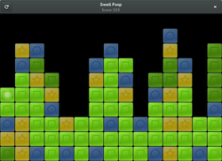

Swell Foop
Dieser Artikel wurde für die folgenden Ubuntu-Versionen getestet:
Ubuntu 16.04 Xenial Xerus
Ubuntu 14.04 Trusty Tahr
Zum Verständnis dieses Artikels sind folgende Seiten hilfreich:
Swell Foop  , vor dem Jahr 2009 unter dem Namen "Same GNOME" bekannt, ist ein weiteres Logikpuzzle. Das Ziel ist das Entfernen von so vielen zusammenhängenden Objekte wie möglich mit so wenigen Zügen wie möglich. Gleichfarbige Spielsteine, die einander berühren, werden als Gruppe entfernt. Die übriggebliebenen Objekte fallen zusammen, um die entstandenen Lücken zu schließen, und bilden dadurch neue Gruppen.
, vor dem Jahr 2009 unter dem Namen "Same GNOME" bekannt, ist ein weiteres Logikpuzzle. Das Ziel ist das Entfernen von so vielen zusammenhängenden Objekte wie möglich mit so wenigen Zügen wie möglich. Gleichfarbige Spielsteine, die einander berühren, werden als Gruppe entfernt. Die übriggebliebenen Objekte fallen zusammen, um die entstandenen Lücken zu schließen, und bilden dadurch neue Gruppen.
Die KDE-Variante trägt den Namen Klickety und lässt sich über das gleichnamige Paket installieren.
Installation¶
 Das Spiel ist Bestandteil der GNOME-Games, kann aber auch separat installieren werden. Benötigt wird das folgende Paket [1]:
Das Spiel ist Bestandteil der GNOME-Games, kann aber auch separat installieren werden. Benötigt wird das folgende Paket [1]:
swell-foop (universe)
 mit apturl
mit apturl
Paketliste zum Kopieren:
sudo apt-get install swell-foop
sudo aptitude install swell-foop
Verwendung¶
 Bei Ubuntu-Varianten mit einem Anwendungsmenü erfolgt der Programmstart [2] über "Spiele -> Swell Foop".
Um eine möglichst hohe Punktzahl zu erreichen, sollte man darauf achten, mit jeder Gruppe, die man entfernt, andere Gruppen neu zu erstellen. Vertikale Anordnungen können nicht verändert werden, horizontale Anordnungen allerdings schon. Daher beginnt man im Regelfall mit dem Entfernen der oberen Gruppen. Weil die Punktzahl nicht linear, sondern quadratisch mit der Anzahl der Objekte wächst, ist das Entfernen großer Gruppen deutlich vorteilhafter.
Weitere Hinweise und Tipps sind der Dokumentation  zu entnehmen, die auch mit der Taste
F1 aufgerufen werden kann.
zu entnehmen, die auch mit der Taste
F1 aufgerufen werden kann.
Infobox¶
| Swell Foop | |
| Genre: | Denkspiel (Gedächtnisleistung und Kombinationsvermögen) |
| Sprache: | u.v.a.m. |
| Veröffentlichung: | 2009 |
| Entwickler: | GNOME-Entwicklerteam |
| Systemvoraussetzungen: | - |
| Medien: | Download |
| Strichcode / EAN / GTIN: | - |
| Läuft mit: | nativ |
 Übersichtsartikel
Übersichtsartikel- Erstellt mit Inyoka
-
 2004 – 2017 ubuntuusers.de • Einige Rechte vorbehalten
2004 – 2017 ubuntuusers.de • Einige Rechte vorbehalten
Lizenz • Kontakt • Datenschutz • Impressum • Serverstatus -
Serverhousing gespendet von